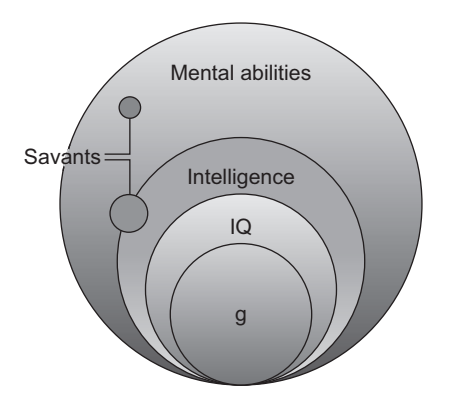
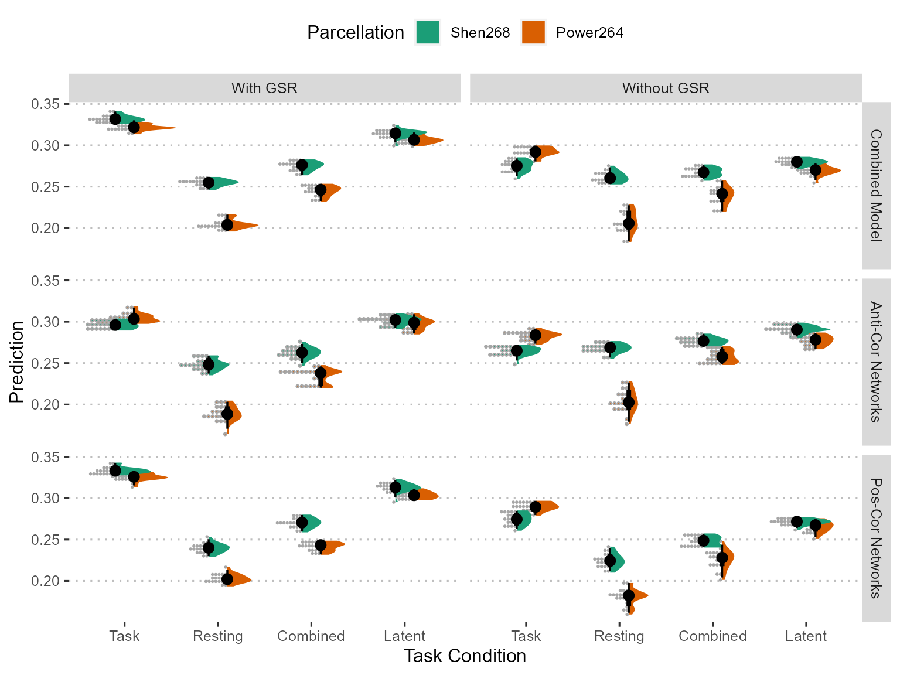
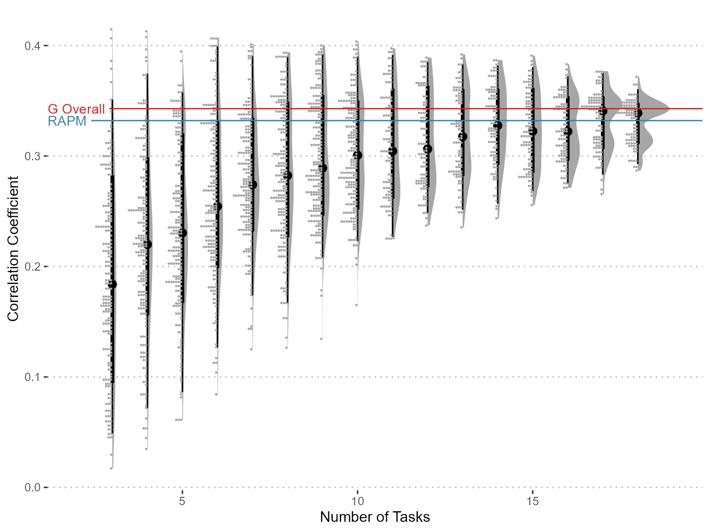
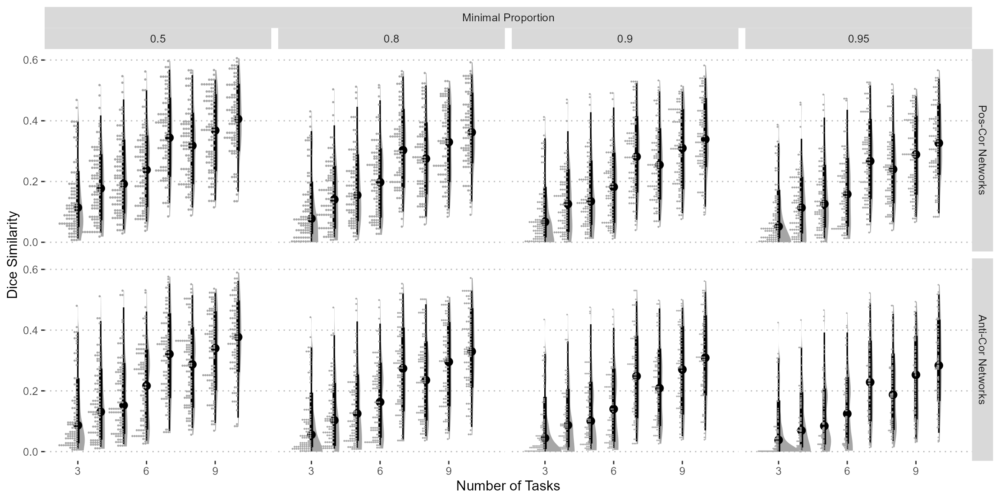
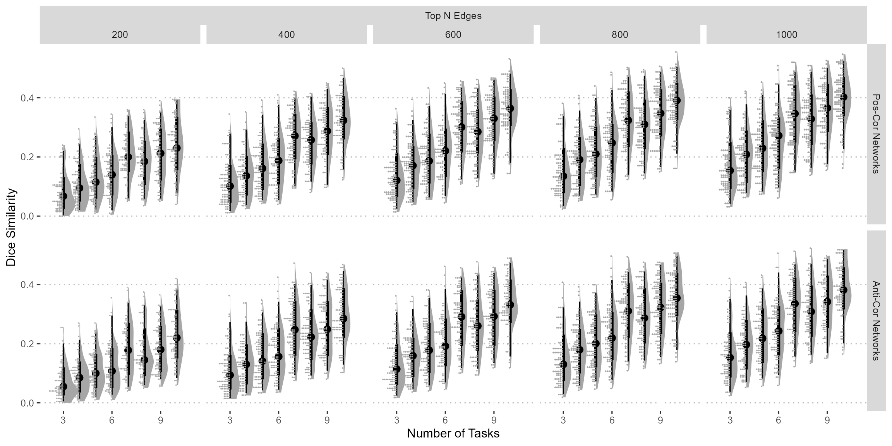

The neural substrates of general cognitive ability based on multiple cognitive tasks
2023-06-30
Issues on Intelligence
Definition
- Binet: “judgment, otherwise called good sense, practical sense, initiative, the faculty of adapting one’s self to circumstances”
- Gardner: “the ability to solve problems, or to create products, that are valued within one or more cultural settings”
- “Ability to understand complex ideas, to adapt effectively to the environment, to learn from experience, to engage in various forms of reasoning, to overcome obstacles by taking thought.” (Neisser, 1996)
- “[A] very general mental capability that, among other things, involves the ability to reason, plan, solve problems, think abstractly, comprehend complex ideas, learn quickly and learn from experience. It is not merely book learning, a narrow academic skill, or test-taking smarts. Rather, it reflects a broader and deeper capability for comprehending our surroundings catching on, making sense of things, or figuring out what to do.” (Gottfredson, 1997)
- “A general cognitive ability related to solving problems efficiently and effectively.” (Barbey, 2021)
Intelligence and g
General intelligence (i.e., g-factor) was first proposed by Spearman (1904) to account for the “positive manifold” phenomenon of cognitive tests.
Given the term “intelligence” is hard to define and easily leads to confusion, many researchers (see Jensen (1998)) focused on the g (i.e., general intelligence) (Barbey, 2021; Haier, 2017).
Current cognitive scientists also defined intelligence as general cognitive ability (Barbey, 2021), which can be derived by multiple cognitive tasks
Diagram of g and its Relatives
Conceptual relationships among mental abilities, intelligence, IQ, and the g-factor (The intelligent brain, 2013)
Measure of g
Two major influences: sampling of participants and sampling of cognitive tasks
Here we focus on the issue of tasks sampling
Factor analysis method
Task sampling representativeness
Factor Modeling
There are several different factor analysis modeling method:
Spearman Model
Bifactor Model
Orthogonalized Hierarchical Model
Jensen (1998) found that the g-factor scores is extremely stable among different methods, with correlation coefficients ranging from 0.991 to 1.000. Here we just focus the classical Spearman model for its simplicity.
Invariance of g

Invariance of g

Number of tasks used in international projects
| Project | Number of Cognitive Tasks | Ref |
|---|---|---|
| UK Biobank (2004) | 4 | Cox (2019) |
| HCP (2009) | 12 | Dubois (2018) |
| Aging Brain Cohort (2021) | 5 (part of NIH toolbox) | Newman-Norlund (2021) |
| ABCD Study (2015) | 10 (7 from NIH toolbox) | Thompson (2019) |
Research Questions
- How the number of tasks affect the measure of g?
- More reliable and more valid?
- Can neural predictability be improved by including more tasks?
- More predictable and shows more reliable predicting networks?
- What are the exact neural substrate of g based on multiple cognitive tasks?
Our Dataset
Cognitive Tasks
- 19 Tasks (20 task indices) included
- Working Memory (5): Letter 3-back, Spatial 2-back, Keep Track, Operation Complex Span, Symmetry Complex Span
- Response Inhibition (3): Anti-Saccade (2 indices), Stop-Signal, Stroop
- Shifting (3): Size-Life Judgment, Color-Shape Judgment, Number-Letter Judgment
- Learning and Memory (3): Face Name Association, Symbol Memory, Pattern Separation
- Attention and Speed (5): Continuous Performance Test, Filtering Task, Line Orientation, Simple Reaction Time, Choice Reaction Time
Sample Size
Behavior sample: 1730 participants (Mean age = 20.8, SD = 2.1, range: [16.8, 30.83]; Sex: 58.9% females, 41.1% males, 0.0% other)
FMRI sample: 731 participants (Mean age = 20.9, SD = 2.2, range: [17, 29]; Sex: 62.5% females, 37.5% males, 0.0% other)
Explained Variance

Figure 1: Variance Explained by the g Factor. The horizontal line gives the variance explained by the g factor estimated from all the tasks.
Correlation with RAPM

Figure 2: Correlation with Raven’s Advanced Progressive Matrices (RAPM) scores. The horizontal line is the correlation between gF score estimated from all task indices and RAPM.
Correlation between estimated g in Pairwise Sampling
Figure 3: The correlation between g scores estimated from each pair of sampling. For each sampling, a pair of equal-number tasks are drawed without replacement. So the maximal number of tasks will be 10, and this figure shows that the correlations between the paired g scores increase as the number of tasks increase.
Neural Predictability
CPM hyperparamters checking
Figure 4: Compare different CPM hyper-parameters. We chose a threshhold method based on alpha level of correlation and a threshhold level at 0.01.
Find the best task condition to predict intelligence
Figure 5: Using CPM method to predict Raven score by FC from different states, we found that task-induced (i.e. n-back task) showed best performance, though combing task and resting states using the first principal component showed comparable performance. What’s more, global signal regression will enhance the performance, whereas different parcellation showed comparable performance.
Prediction Trending
Figure 6: Prediction Trending (based on CPM).
Similarity Between Predictive Network of Pairs
Figure 7: Dice coefficient between each pair of predictive network in pairwise sampling. The edges are kept when given proportion of resamples selected. Here only the results from task state are shown.
Similarity Between Predictive Network of Pairs
Figure 8: Dice coefficient between each pair of predictive network in pairwise sampling. Only the most selected of given number of edges are kept. Here only the results from task state are shown.
Model g with the Highest Loading Tasks
The following is to test whether the correlation between the estimated g-factor scores and the brain functional connectivity can be improved by eliminating certain observed variables, e.g., those with the least factor loading.
Trends by Number of Kept tasks
Figure 9: The correlation between g factor scores and brain functional connectivity reaches plateau after 6 variables of largest factor loading were included, whereas that of RAPM scores reaches plateau after 13 variables. This might indicate that more variables might not necesssarily be beneficial to the measure of g-factor estimation, esp. when adding low g loading tasks.
Single Task Benchmark

Figure 10: Correlation with brain FC for single tasks. The tasks are ordered by the factor loading in one g factor model.
Model-selected Networks Analysis
Node Degree (Shen268)
Chord Diagram (Shen268)
Figure 12: Chord diagram of top 500 edges
Network Contribution (Shen268)
Figure 13: Contribution of Networks
Node Degree (Power264)

Chord Diagram (Power264)
Figure 15: Chord diagram of top 500 edges
Network Contribution (Power264)
Figure 16: Contribution of Networks